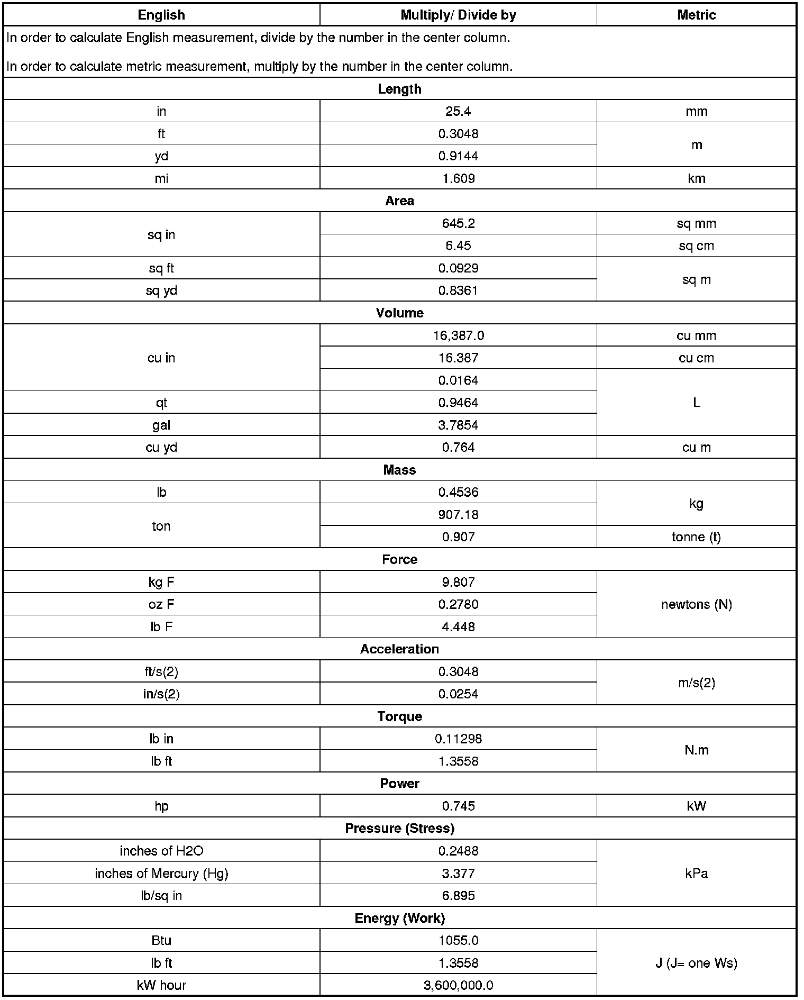
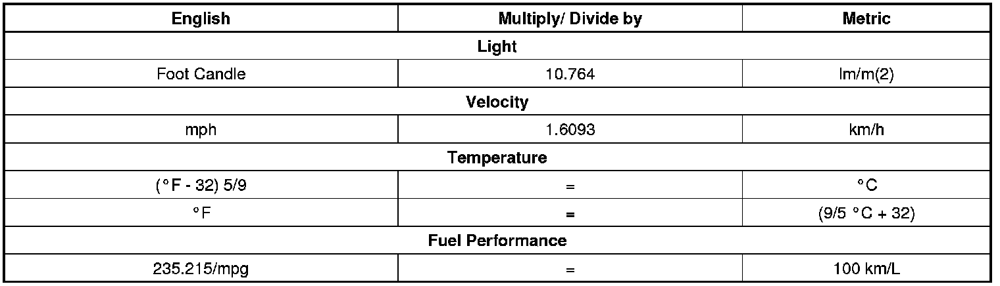

Operation CHARM
: Car repair manuals for everyone.
Home
>>
Cadillac
>>
2008
>>
SRX AWD V8-4.6L
>>
Repair and Diagnosis
>>
Powertrain Management
>>
Ignition System
>>
Sensors and Switches - Ignition System
>>
Crankshaft Position Sensor
>>
Diagrams
>>
Diagnostic Aids
>>
US English/Metric Conversion
US English/Metric Conversion
US English/Metric Conversion

